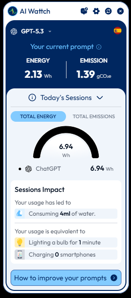

Quienes somos
Los Supernenes
Somos una organizacion sin animo de lucro comprometida con la proteccion del medio ambiente a traves del uso responsable de la tecnologia. Nuestro proposito es ayudar a las personas a comprender el impacto energetico del mundo digital, especialmente en herramientas modernas como la inteligencia artificial y los modelos de lenguaje.
Creemos que la innovacion no debe estar enfrentada con la sostenibilidad. Por eso desarrollamos iniciativas educativas y soluciones digitales sencillas que permitan conocer el coste ambiental de nuestras acciones online y fomentar habitos tecnologicos mas responsables.
Nuestras ideas
Un proyecto pensado para generar impacto
Educacion ambiental
Difundir informacion clara sobre el impacto ecologico del consumo digital y la inteligencia artificial.
Transparencia tecnologica
Mostrar de forma sencilla el coste energetico de las acciones que realizamos en internet.
Herramientas sostenibles
Crear extensiones y soluciones digitales que ayuden a reducir el consumo innecesario.
Producto
Extensión de huella de carbono digital
Nuestra propuesta es una extensión de navegador que calcula la huella de carbono de cada sesión de uso digital y la muestra al instante después de interactuar con chatbots, buscadores y servicios en línea.
El prototipo ficticio alerta sobre el consumo energético real, muestra datos estimados de CO₂ y ofrece recomendaciones para navegar con menor impacto: apagar pestañas innecesarias, elegir versiones más ligeras y reducir el uso de modelos de lenguaje cuando no sea indispensable.

Nuestros aliados
Colaboración para multiplicar el impacto
Competidores
Antarctica’s AI-Wattch y Ejhusom’s MELODI inspiran la innovación y muestran el interés creciente en medir el consumo digital.
Asociaciones beneficiadas
Asociación Aldeas Verdes y los usuarios de chatbots recibirían información clara y campañas de concienciación.
Administración
Departamento de Medio Ambiente y Recursos Hídricos y Ministerio para la Transición Ecológica apoyan la cultura de consumo responsable.
Medios de comunicación
RRSS y canales nacionales de noticias amplificarían el mensaje y ayudarían a que la huella digital sea un tema social relevante.
Video